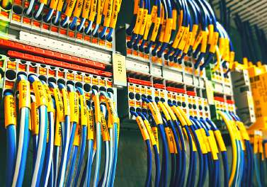

تمتلك بيوت تك (Beyout Tech) سابقة أعمال ميدانية ضخمة في أعمال إحلال وتجديد وتأسيس البنية التحتية لشبكات الجهد المتوسط (11kV / 22kV) والجهد المنخفض (0.4kV). يشمل نطاق أعمالنا توريد وتركيب الموزعات الرئيسية، محولات القدرة والتوزيع، مد الكابلات الأرضية، تنفيذ علب النهايات واللحامات، اللوحات الكهربائية، وأعمدة إنارة الطرق.

توريد وتركيب الموزعات الرئيسية وخلايا الجهد المتوسط (11kV / 22kV) ووحدات الربط الحلقي (RMU) المزودة بقواطع الغاز SF6 أو الفراغية وأجهزة الوقاية الرقمية.
حفر الخنادق ومد كابلات الجهد المتوسط المسلحة XLPE، وتنفيذ علب النهايات واللحامات الحرارية أو الباردة (Heat/Cold Shrink Terminations & Joints) بأعلى معايير العزل.
تركيب محولات التوزيع الزيتية والجافة وأكشاك المحولات الكاملة بمختلف القدرات (من 200 ك.ف.أ حتى 2500 ك.ف.أ) شاملة القواعد الخرسانية وشبكات التأريض.
مد كابلات الجهد المنخفض، تركيب اللوحات العمومية والفرعية (MDB, ATS, Capacitor Banks)، صناديق التوزيع (Pillars)، وتوريد وتركيب أعمدة وكشافات إنارة الطرق.
توريد وتركيب الموزعات الرئيسية، وحدات الربط الحلقي RMU، ومحولات التوزيع القدرات المختلفة شاملة القواعد والتأريض.
أعمال الحفر والردم ومد الكابلات المسلحة داخل المواسير والخنادق للمدن الجديدة والمشروعات القومية والمصانع.
فنيون ومهندسون معتمدون لتنفيذ علب النهايات الداخلية والخارجية ووصلات اللحام لكابلات الجهد المتوسط والمنخفض.
توريد وتركيب لوحات التوزيع الرئيسية والفرعية، لوحات التحويل الأوتوماتيكي ATS، ولوحات المكثفات لتحسين معامل القدرة.
توريد وتركيب أعمدة الإنارة المسلوبة والمجلفنة بكشافات LED الموفرة للطاقة ولوحات التحكم الآلي بالإنارة العامة.
إجراء كافة اختبارات مقاومة العزل (Megger)، اختبار الجهد العالي للكابلات، وقياس مقاومة الأرضي لضمان سلامة التشغيل.